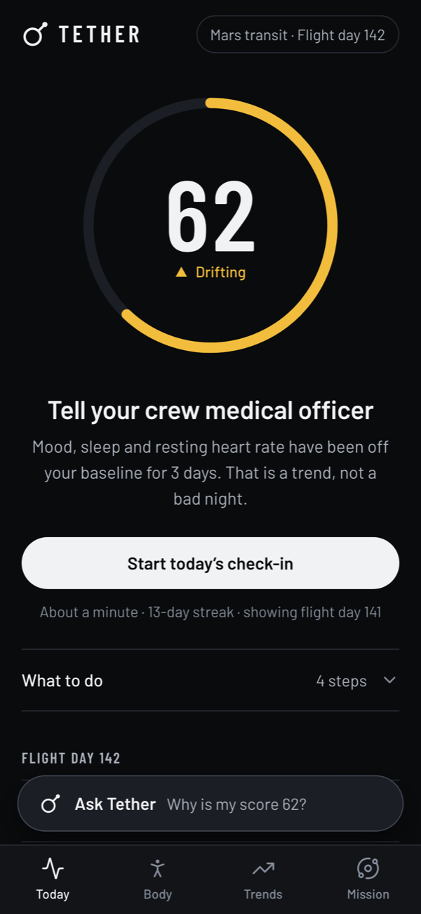
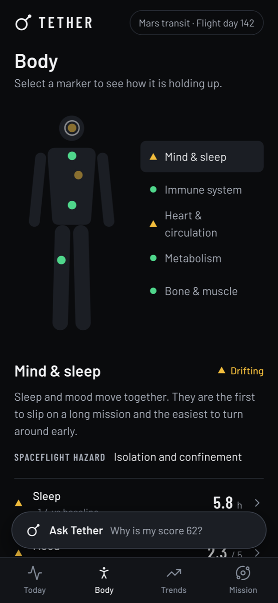
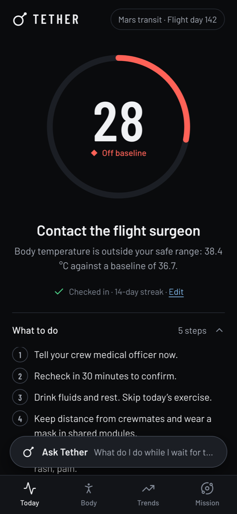
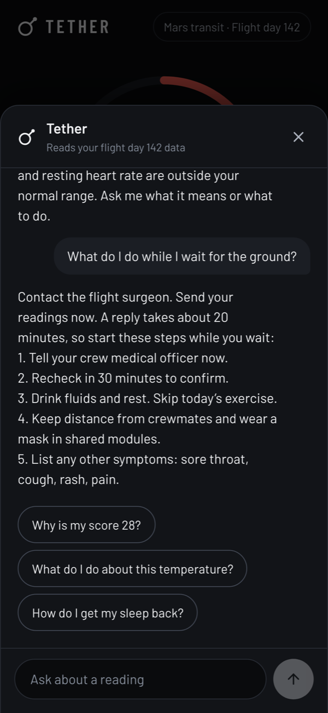

Tether is a one-minute daily health check for crews on long space missions. It compares every reading with the crew member’s own pre-flight baseline, shows where they have drifted, and turns that into one decision: handle it yourself, tell the crew medical officer, or contact the flight surgeon.

Score. One number, three states, and who needs to act.

Body map. Five systems, each tied to a spaceflight hazard.

Plan. A fever sends it to the ground, with steps for the wait.

Ask Tether. An assistant that explains your own readings.
A working web app, live at the link below. A crew member sets up a profile (mission, mission day, baseline) or explores a demo. Each day they log eight readings: sleep, mood, resting heart rate, blood pressure, temperature, blood glucose, body mass, and exercise. Every step explains how to measure without gravity and why it matters.
Plain rules decide every status and plan, so each recommendation can be traced to a reading and a limit. A three-day trend, or two systems drifting together, goes to the crew medical officer. The signal delay changes the advice: on a Mars transit a reply takes about 20 minutes, so Tether says what to do while waiting.
Ask Tether uses Google Gemini when there is a link and on-board rules when there is not. Radiation dose is tracked against NASA’s 600 mSv career limit. Wearables that broadcast standard Bluetooth heart rate fill in the heart-rate step. Four mission environments, from low Earth orbit to the surface of Mars.
No real astronaut data. The demo runs on a simulated 141-day log for one fictional crew member, generated in code. Thresholds illustrate the approach and are not medical advice. Physiology, dose rates and limits come from:
React, TypeScript and Vite · hand-drawn SVG charts · Google Gemini API · Cloudflare Pages · Web Bluetooth